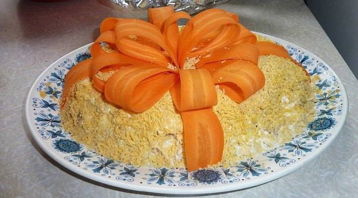

Салат «Мимоза»
Ингредиенты:
- плавленый сыр — 1 шт.
- сливочное масло — 50-100 г
- шпроты — 1 банка (200 г)
- вареная морковь — 2 шт.
- вареное яйцо — 4 шт.
- майонез — по вкусу
- сливочное масло — 50 г
- зеленый лук — 1/2 пучка
- морковь — 1 большая (Для украшения)
Приготовление:
- Овощи, сыр и сливочное масло натираем на средней, а желток на мелкой терке.
- На каждый слой наносим майонезную сеточку.
- Собираем салат с плавленым сыром на большой плоской тарелке: размятые шпроты — мелко нарубленный зеленый лук — белки яиц — морковь — плавленный сыр с кусочками сливочного масла — желтки.
- Из моркови нарезаем длинные продольные ленточки, собираем бантом и украшаем Мимозу.
- Даем пропитаться не менее 2 часов, в холодильнике. Приятного аппетита!